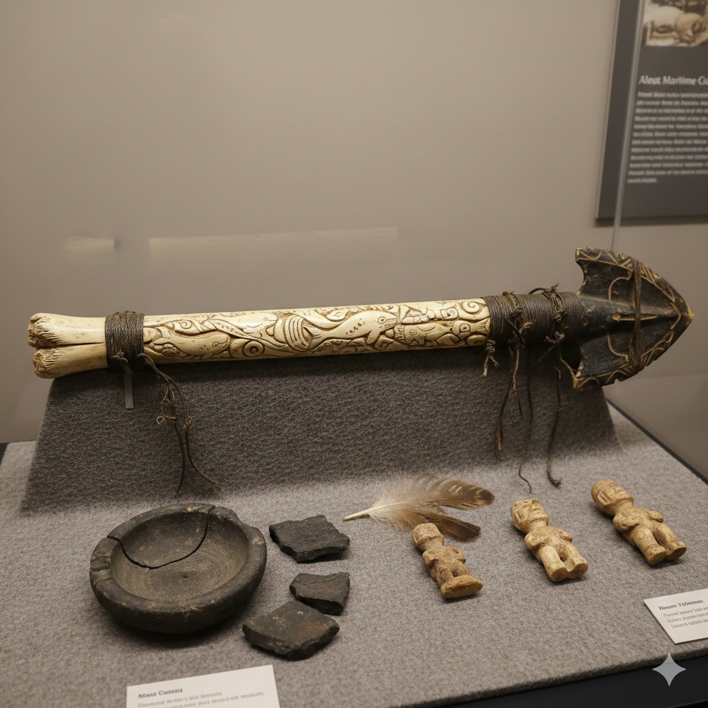
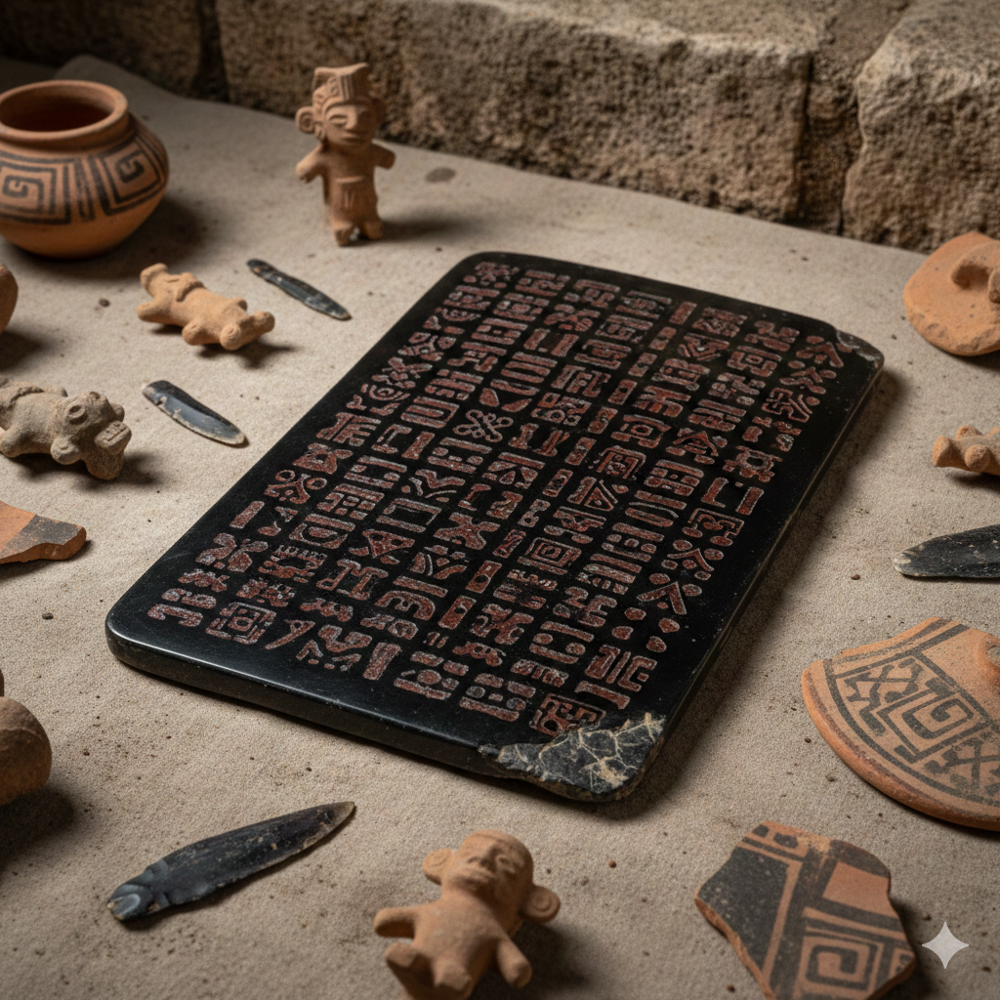
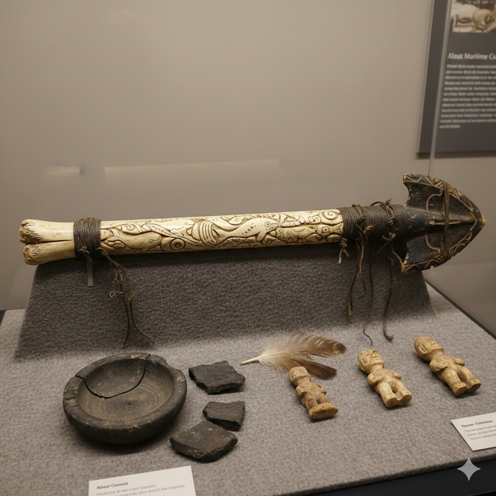
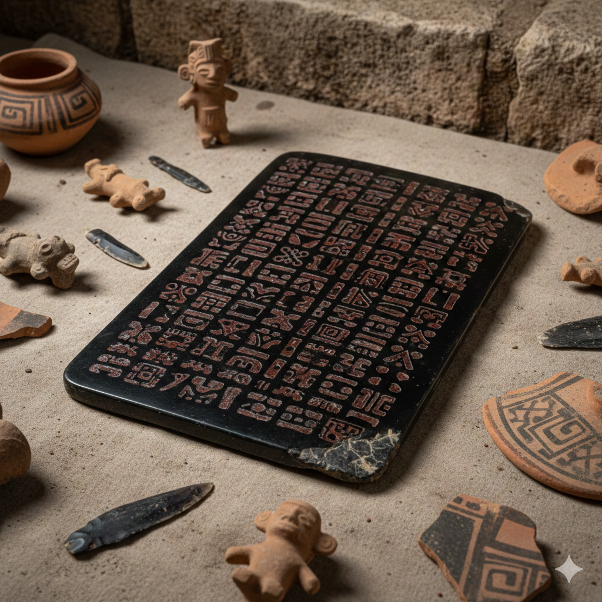

Artifacts
Click on an image to see the artifact's interpretation modal.
 



Artifact Histories
Sunstone Amulet
This amulet is made from polished sunstone and dates back approximately 900 years. It was found in a ceremonial burial mound and may have been used for ritual purposes. Unique etchings suggest symbolic meanings associated with sunlight and fertility.
Ceremonial Whale Harpoon
This whale harpoon was carved from whale bone over 700 years ago. Found in a coastal village site alongside fishing tools, it likely served both functional and ceremonial roles, possibly symbolizing the community’s maritime identity and connection to whales.
Obsidian Writing Tablet
This tablet of obsidian is approximately 1200 years old, discovered in a domestic dwelling site. Its flat polished surface bears geometric carvings, likely used for teaching, record-keeping, or symbolic storytelling within its culture.